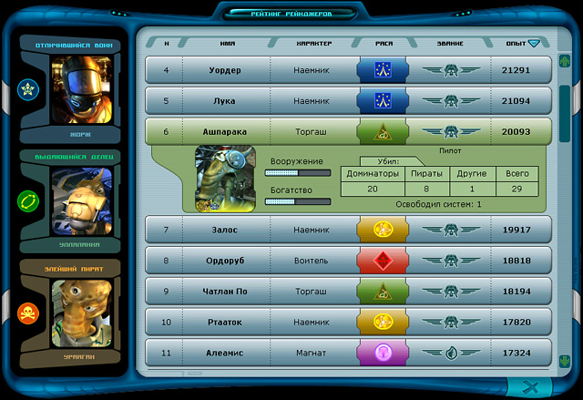

Руководство рейнджера > Панель
навигации > Рейтинг рейнджеров (R)
|
Руководство рейнджера > Панель
навигации > Рейтинг рейнджеров (R)
|
| Рейтинг рейнджеров (R) Рейтинг - вещь открытая и ведется Центрами рейнджеров для показательного сравнения. Он представляет собой список всех зарегистрированных рейнджеров, в котором указан их опыт и другие важные характеристики. (Опыт начисляется рейнджеру за освобождение звездных систем, за военные действия, за торговлю, выполнение заданий и т.д. Получая опыт, каждый рейнджер может повышать свои навыки.) Чем выше рейтинг рейнджера, тем более весомым считается его вклад в общее дело. |

| В левой части окна находится своеобразная "доска почета": рейнджеры, признанные
наиболее выдающимися в соответствующей категории (торговец, воин, пират). Примечание. Чтобы увидеть рейтинг категории наведите курсор на характер рейнджера. По умолчанию список отсортирован по опыту. Существует возможность отсортировать список рейтинга по другим критериям: имени, расе или званию рейнджера, в возрастающем или убывающем порядке. Чтобы отсортировать список по выбранному вами критерию: • Щелкните по заголовку соответствующего столбца. Чтобы отсортировать по возрастанию или убыванию: • Щелкните по этому же заголовку повторно. |